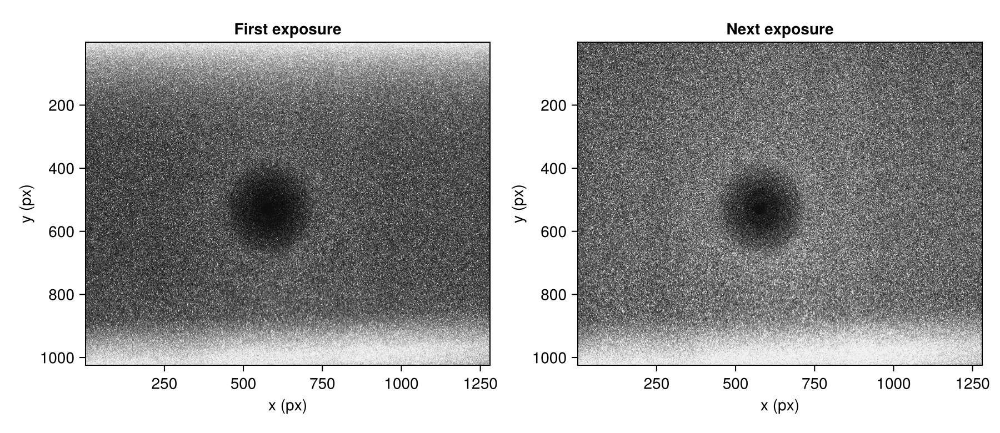
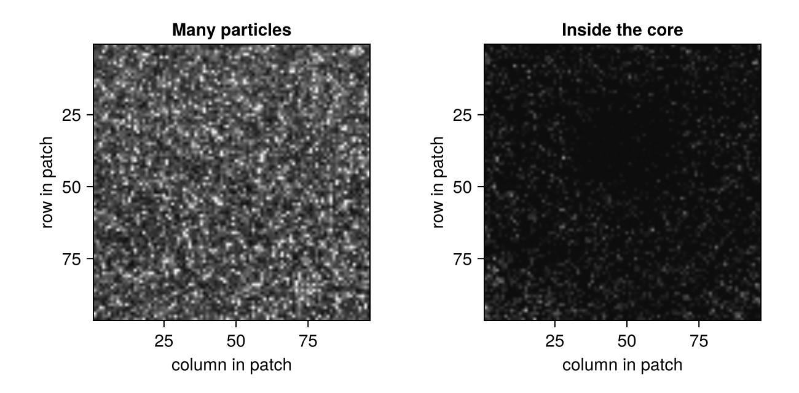
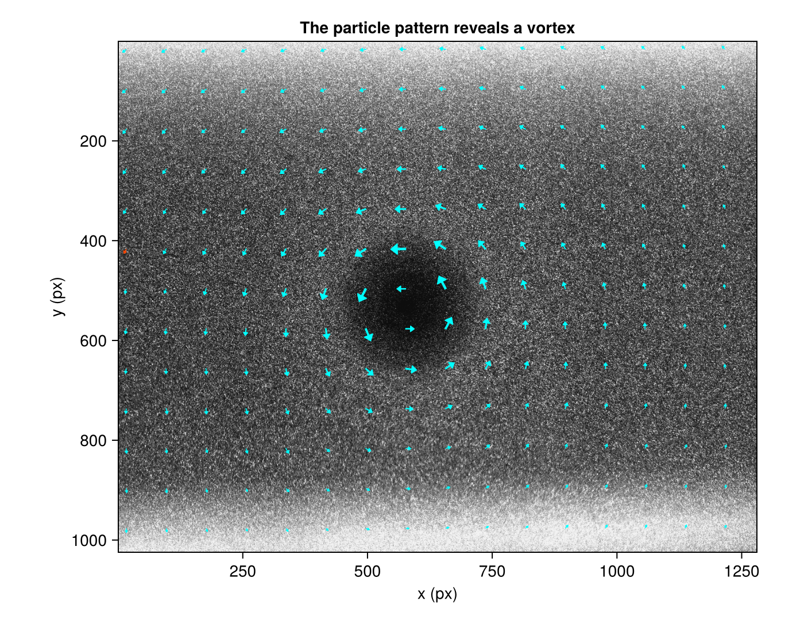
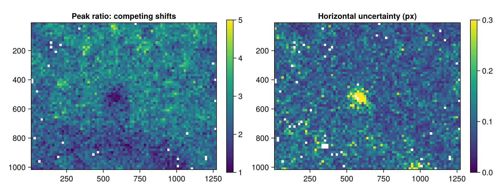
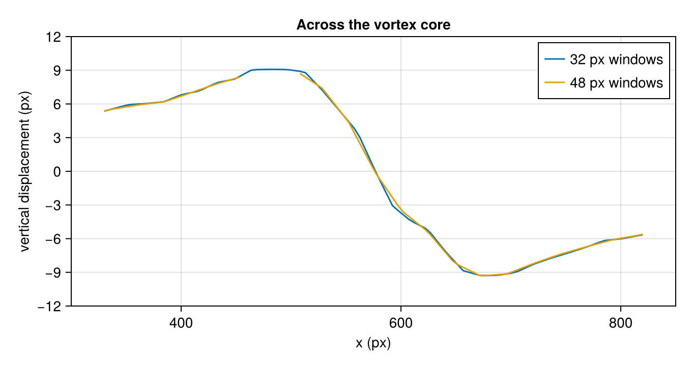

A wing-tip vortex from a real recording
This tutorial measures the in-plane field of a wing-tip vortex and assesses where the measurement is weaker. The dark disk in the images is the vortex core, from which the swirling flow has centrifuged most particles.
The data is case A of the first International PIV Challenge (Stanislas et al., 2003), recorded by C. Kähler (DLR) in the German–Dutch Wind Tunnels. The image pair ships with Hammerhead.
The images
using Hammerhead
using CairoMakie
using Statistics: median, quantile
dir = joinpath(pkgdir(Hammerhead), "test", "reference_images", "A")
imgA = load_image(joinpath(dir, "A001_1.tif"))
imgB = load_image(joinpath(dir, "A001_2.tif"))
let
fig = Figure(size = (900, 390))
for (k, img, title) in ((1, imgA, "First exposure"), (2, imgB, "Next exposure"))
ax = Axis(fig[1, k]; title, yreversed = true, aspect = DataAspect(),
xlabel = "x (px)", ylabel = "y (px)")
image!(ax, (0.5, size(img, 2) + 0.5), (0.5, size(img, 1) + 0.5), img';
colormap = :grays, colorrange = (0, 0.6))
end
fig
end
The images have illumination bands, bright particle images and a dark core. At the same contrast, a well-seeded patch and a patch inside the core differ markedly in the number of particle images available to a correlation window.
let
fig = Figure(size = (650, 320))
for (k, rows, cols, title) in ((1, 200:295, 200:295, "Many particles"),
(2, 497:592, 529:624, "Inside the core"))
ax = Axis(fig[1, k]; title, yreversed = true, aspect = DataAspect(),
xlabel = "column in patch", ylabel = "row in patch")
image!(ax, (0.5, length(cols) + 0.5), (0.5, length(rows) + 0.5),
imgA[rows, cols]'; colormap = :grays, colorrange = (0, 0.6))
end
fig
end
A vector in the core can agree with its neighbors even when few particles contribute to it, so agreement alone does not indicate a strong measurement.
Measure the field
A single pass with 96 px windows estimates the displacement range. The summary uses only finite vectors without outlier or mask flags.
preview = run_piv(imgA, imgB,
PIVParameters(window_size = 96, overlap = 48,
padding = true, apodization = :gauss))
preview_ok = .!(preview.outliers .| preview.mask) .&
isfinite.(preview.u) .& isfinite.(preview.v)
shifts = hypot.(preview.u[preview_ok], preview.v[preview_ok])
(p95_shift_px = round(quantile(shifts, 0.95); digits = 1),
largest_shift_px = round(maximum(shifts); digits = 1))(p95_shift_px = 7.2, largest_shift_px = 9.7)Displacements below about one quarter of the first window's width are a reasonable starting point, not a guarantee. The schedule begins at 64 px, refines to 32 px, and repeats the final window size to estimate uncertainty.
passes = multipass_parameters([64, 32, 32];
padding = true, apodization = :gauss, uncertainty = true)
result = run_piv(imgA, imgB, passes)
let
fig = Figure(size = (700, 540))
ax = Axis(fig[1, 1]; title = "The particle pattern reveals a vortex",
yreversed = true, aspect = DataAspect(),
xlabel = "x (px)", ylabel = "y (px)")
image!(ax, (0.5, size(imgA, 2) + 0.5), (0.5, size(imgA, 1) + 0.5), imgA';
colormap = :grays, colorrange = (0, 0.6))
plot_vector_field!(ax, result; stride = 5, color = :cyan,
replaced_color = :orangered, lengthscale = 3)
fig
end
The vectors circulate around the dark core. They are in-plane displacements; the free stream is perpendicular to the light sheet. Arrow lengths are enlarged threefold, and orange arrows carry outlier flags. A smooth field does not imply that the evidence is equally strong everywhere.
Measurement quality across the field
Three diagnostics describe different things. A validation flag marks a vector that fails a check, such as disagreement with its neighbors. A low peak ratio means another correlation peak competes with the chosen shift. The estimated uncertainty describes random correlation error (Wieneke, 2015). They are read together rather than individually.
valid = .!(result.outliers .| result.mask) .&
isfinite.(result.u) .& isfinite.(result.v)
(accepted_vectors = count(valid), flagged_vectors = count(result.outliers))
let
fig = Figure(size = (900, 350))
pr = copy(result.peak_ratio)
pr[.!valid] .= NaN
ax1 = Axis(fig[1, 1]; title = "Peak ratio: competing shifts",
yreversed = true, aspect = DataAspect())
hm1 = heatmap!(ax1, result.x, result.y, pr'; colorrange = (1, 5))
Colorbar(fig[1, 2], hm1)
sigma = copy(result.uncertainty_u)
sigma[.!valid] .= NaN
ax2 = Axis(fig[1, 3]; title = "Horizontal uncertainty (px)",
yreversed = true, aspect = DataAspect())
hm2 = heatmap!(ax2, result.x, result.y, sigma'; colorrange = (0, 0.3))
Colorbar(fig[1, 4], hm2)
fig
end
Both maps distinguish the core from the seeded outer region. Medians per region, excluding flagged and nonfinite values, quantify the difference.
distance_from_core = [hypot(x - 577, y - 545) for y in result.y, x in result.x]
function region_quality(region)
selected = region .& valid
pr = filter(isfinite, result.peak_ratio[selected])
sigma = filter(isfinite, result.uncertainty_u[selected])
(vectors = count(selected), median_peak_ratio = median(pr),
median_uncertainty_px = median(sigma))
end
(core = region_quality(distance_from_core .< 120),
outer_flow = region_quality(distance_from_core .> 300))(core = (vectors = 177, median_peak_ratio = 2.0923690190221325, median_uncertainty_px = 0.140305409518263), outer_flow = (vectors = 3846, median_peak_ratio = 2.4646409163799095, median_uncertainty_px = 0.09079883869667763))Fewer visible particles can weaken a measurement that still passes a neighbor check. This recording has no reference displacement field: these diagnostics show evidence and sensitivity, not the true error.
Sensitivity to window size
A second analysis uses 48 px final windows. Larger windows contain more particles but average the motion over a larger footprint. Both fields are sampled along the same horizontal line through the vortex.
passes48 = multipass_parameters([64, 48, 48];
padding = true, apodization = :gauss, uncertainty = true)
result48 = run_piv(imgA, imgB, passes48)
line = [(330.0, 545.0), (820.0, 545.0)]
profile32 = extract_profile(result, line; n = 100)
profile48 = extract_profile(result48, line; n = 100)
let
fig = Figure(size = (680, 360))
ax = Axis(fig[1, 1]; title = "Across the vortex core",
xlabel = "x (px)", ylabel = "vertical displacement (px)",
limits = (300, 850, -12, 12))
lines!(ax, profile32.x, profile32.v; label = "32 px windows")
lines!(ax, profile48.x, profile48.v; label = "48 px windows")
axislegend(ax)
fig
end
Both profiles are interpolated onto common positions, which makes them comparable but cannot restore detail averaged out by a large window. The two differ most at the steep gradients, where a core-width or gradient estimate is most sensitive to the processing. Increasing the overlap at a fixed window size adds samples but not resolved detail.
Effect of high-pass filtering
The illumination bands suggest high-pass filtering. Filters can also remove particle signal, so the change is evaluated on the same pair before it is adopted.
filteredA = highpass_filter(imgA; sigma = 8)
filteredB = highpass_filter(imgB; sigma = 8)
filtered_result = run_piv(filteredA, filteredB, passes)
function pair_quality(r)
accepted = .!(r.outliers .| r.mask) .& isfinite.(r.u) .& isfinite.(r.v)
ratios = filter(isfinite, r.peak_ratio[accepted])
(accepted = count(accepted), flagged = count(r.outliers),
median_peak_ratio = median(ratios),
lower_peak_ratio = quantile(ratios, 0.1))
end
(raw = pair_quality(result), highpass = pair_quality(filtered_result))(raw = (accepted = 4949, flagged = 28, median_peak_ratio = 2.4665499854398214, lower_peak_ratio = 1.7909669456998025), highpass = (accepted = 4908, flagged = 69, median_peak_ratio = 2.0754077027626394, lower_peak_ratio = 1.408014959284208))The peak-ratio distribution and the flag count show whether competing peaks weakened and whether more vectors were rejected. Such a comparison can reject an unhelpful setting, but a higher peak ratio alone does not establish a more accurate field. Other filter widths, or CLAHE (clahe), are compared the same way; Preprocess images describes what each operation changes.
The results are in pixels between exposures: the sample data supplies no spatial calibration or exposure delay. Scale to physical units covers the conversion for a calibrated recording.
From image pairs to flow statistics separates a persistent flow feature from pair-to-pair variation; Inspect particle-image quality covers difficult image regions.
This page was generated using Literate.jl.